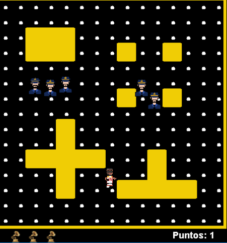

HISTORIA DEL VIDEOJUEGO
En "En busca del Grammy" te sumerges en una aventura donde controlarás al famoso cantante puertorriqueño Anuel AA, que tras un tiempo en la cárcel
debido a posesión de armas, se adentra en el mundo de la música, donde tiene gran éxito, consiguiendo los premios más prestigiosos en la industria musical.
Todo ello ocurrirá en un mundo de pixel.
Debido a su paso por la cárcel, la policía anda en su búsqueda. Tu objetivo será recoger todos los puntos que se encuentrarn disponibles en el mapa
evitando que la policía te capture. Comienzas con 3 Grammys, y cada vez que seas capturado la policía te requisará uno de ellos. ¿CÚANTOS GRAMMYS SERÁS CAPAZ DE CONSEGUIR?
PERSONAJES Y ELEMENTOS
- MAPA: Un mapa cerrado con obstáculos donde deberás conseguir todos los puntos disponibles para escapar

- ANUEL: Es el protagonista del juego, un famoso cantante puertorriqueño que busca conseguir todos los grammys, pero la policía no se lo pondrá fácil.
- POLICÍA: Son los máximos enemigos de Anuel. Su objetivo será capturarte para requisarte todos los grammys. Son muy rápidos, ten cuidado.
- GRAMMYS: El más preciado premio para un cantante, hazte con ellos y evita que la policía te los requise.
BANDA SONORA
Toda la música que aparece en el videojuego pertenece al protagonista del mismo
- Anuel AA - Soldado Y Profeta (Remix) → 248M de visualizaciones
- Foreign Teck, Anuel AA - EL NENE → 63M de visualizaciones
- Anuel AA - Ayer ft. Dj Nelson → 475M de visualizaciones
- Brray, Anuel AA, Chencho Corleone, Jhayco, Ryan Castro - Corazón Roto pt.3 → 22M de visualizaciones